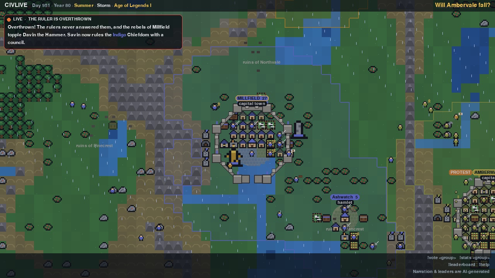
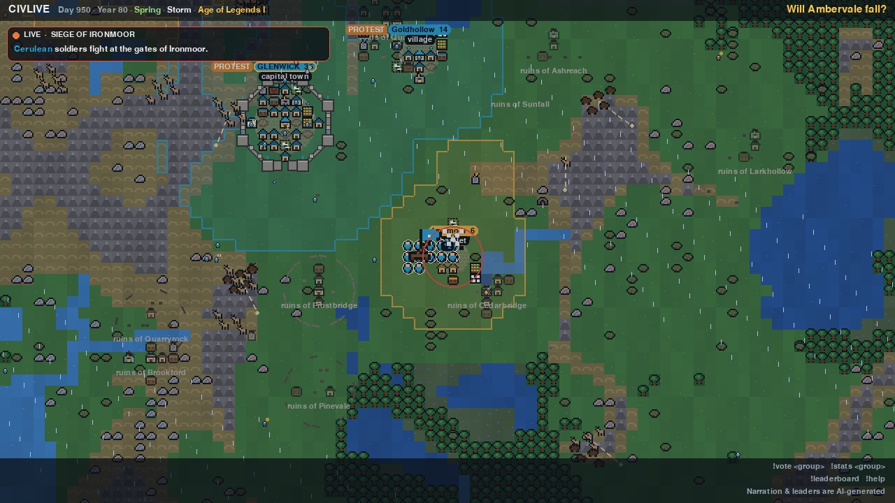
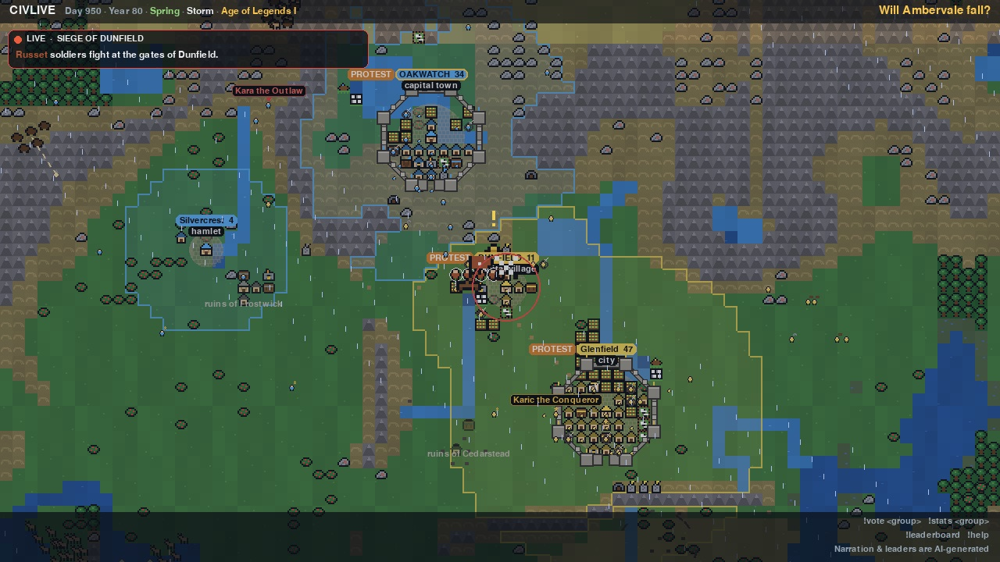
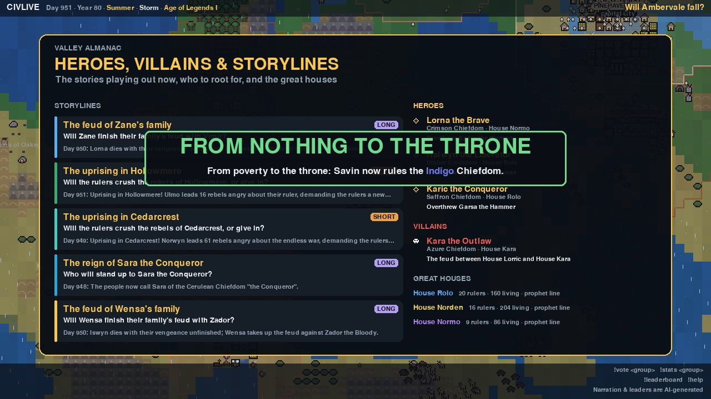
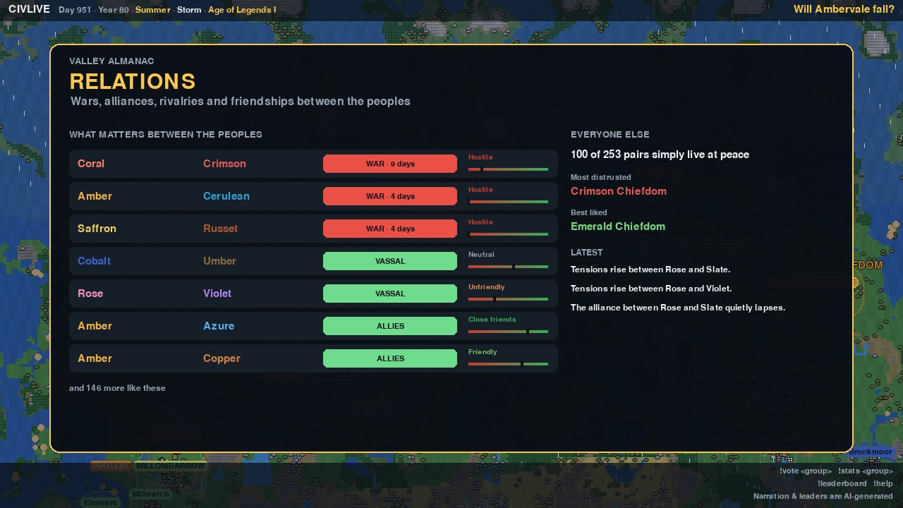

Live every day
CIVLIVE
An AI civilization evolving live
Lone wanderers pair up, form bands and grow into tribes, villages, kingdoms and empires. AI rulers make every choice and explain it on stream. Nothing is scripted.
On air daily at 2 PM Eastern for about eight and a half hours
The ladder
From one wanderer to empires
Every people climbs by growing, discovering and settling, and falls back when it loses towns or people. No one is handed a rung.
 WanderersAlone, foraging and looking for company
WanderersAlone, foraging and looking for company- BandThree who bond share a camp and a leader
 TribeTwelve or more, with Fire and Language
TribeTwelve or more, with Fire and Language VillageFarming lets a tribe settle its first town
VillageFarming lets a tribe settle its first town- ChiefdomTwo towns, armies and treaties
 KingdomWriting, three towns and a crown
KingdomWriting, three towns and a crown EmpireSix towns and the top of the ladder
EmpireSix towns and the top of the ladder
Real frames from the show
Day 950 in the valley
Eighty years in, 1,277 people lived across 46 towns. These frames are straight from the stream: a revolt that toppled a ruler, two sieges, and the Valley Almanac.





What runs the world
A whole medieval world, simulated
Dozens of systems run side by side, and every story on screen grows out of them.
AI rulers who explain themselves
Each people's ruler has a personality, an ambition and a plan. Every choice comes with its reasons, shown on stream.
Leaders and ambitions →
Lineage and reputation
Genes, skills and fortunes pass to children. Great houses rise, heroes and villains earn their names, and blood feuds outlive the people who started them.
People and lineage →
Discovery by doing
Fire comes from cold nights, farming from foraging the same patches. Later come iron, printing, clockwork and gunpowder.
Discovery and knowledge →
Markets, coin and greed
Prices follow supply and demand. Rulers tax, borrow and debase the coin, caravans walk the roads, and famine breeds thieves and profiteers.
Markets and coin →
Faiths and creeds
Prophets found religions, schisms split them, and in a crisis a Chosen One may rise. Six ideologies compete for every people.
Culture and faith →
War and sieges
Armies march the real map with the best arms they can pay for. Walls hold, catapults batter them, and towns change hands.
War →
Uprisings and intrigue
Angry towns protest and revolt. Pretenders claim thrones, rival houses stage coups, and assassins strike in the night.
Unrest and intrigue →
Outlaws and bandit kings
The desperate take to the woods. Gangs grow into warbands and hordes, hire out as mercenaries, or seize a town and crown their own king.
Outlaws →A living land
Herds migrate, wolves hunt, soil tires and forests regrow. Plague, floods, blizzards and locusts leave their mark for years.
Land and nature →Taking part
Chat can sway the valley
Type commands in the live chat. They're free.
!1 !2 !3Vote in the open round: an omen, a name, or a ruler's decision!name <idea>Name a new band or town!predict <choice>Call what happens next and climb the monthly leaderboard!root <name>Back a hero or a villain!storyThe storylines unfolding now!helpEverything else
The people decide
When a ruler faces a bold choice, such as war or peace, or crushing a revolt or giving in, chat may get a minute to choose for them. If chat votes, its choice stands.
Omens
Every so often chat picks an omen for the valley: gentle rain, a mild winter, plentiful herds. Busy chat wakes the spirits sooner.
Super Chats
Super Chats and Super Stickers are thanked on stream. One can adopt a villager
to follow through their life and family line (!adopt), or send a small blessing.
These only tilt the odds a little; they never decide wars or wipe out a people.
Honest by design
Real stories, told as they happen
Nothing is scripted
Storylines open, turn and close only on things that really happen in the simulation. Even quiet stretches end by the world's own rules.
AI, and it says so
The rulers' choices and the narration are AI-generated, and the stream says so on screen. When the AI is unavailable, a rule-based council decides.
How the show runs
The stream is produced automatically by a program running on the
channel owner's computer. It manages the channel's own broadcasts and reads public live chat
through the YouTube Data API using the channel owner's authorisation, and answers information
commands like !me with short replies in chat. It never acts on viewers' accounts.
The valley is waiting
Every visit finds it further along.